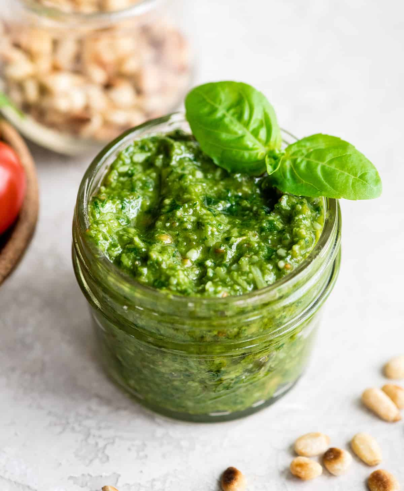

Fresh Basil Pesto Recipe

Description
Originally from Genoa, Italy, pesto traces its name to the Italian word "pestare," which means "to crush or pound." For hundreds of years, pesto was made by pounding the ingredients in a mortar and pestle. It dates back from Roman times when Genoans would crush walnuts with herbs and garlic.
The most popular variety of pesto now is made by "crushing" basil, garlic, pine nuts, olive oil and some hard cheese in a food processor or blender, but there are many varieties of pesto like sun dried tomato pesto or kale pesto.
Ingredients
- 2 cups fresh basil leaves, packed (can sub half the basil leaves with baby spinach)
- 1/2 cup freshly grated Romano or Parmesan cheese (about 2 ounces)
- 1/2 cup extra virgin olive oil
- 1/3 cup pine nuts (can sub chopped walnuts)
- 3 cloves garlic, minced (about 1 tablespoon)
- 1/4 teaspoon salt, or more to taste
- 1/8 teaspoon freshly ground black pepper, or more to taste
Steps
- Place the basil leaves and pine nuts into the bowl of a food processor and pulse several times.
- Add the garlic and Parmesan or Romano cheese and pulse several times more. Scrape down the sides of the food processor with a rubber spatula.
- While the food processor is running, slowly add the olive oil in a steady small stream. Adding the olive oil slowly while the processor is running will help it emulsify and help keep the olive oil from separating. Occasionally, stop to scrape down the sides of the food processor.
- Add salt and freshly ground black pepper to taste.
- Toss with pasta for a quick sauce, dollop over baked potatoes, or spread onto crackers or toasted slices of bread.